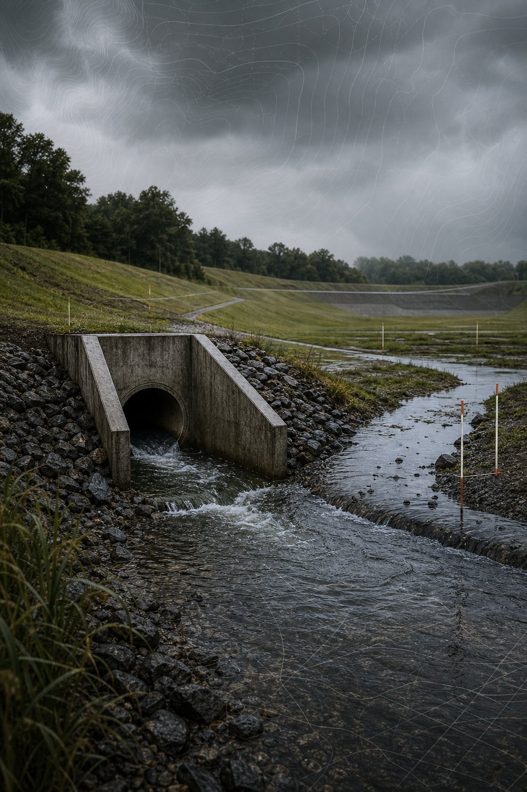
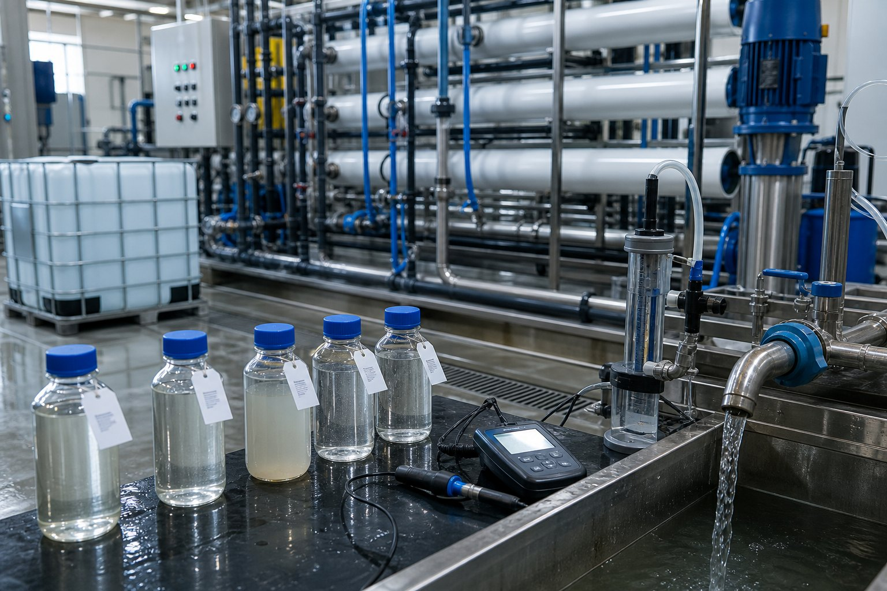

01
Meshach Ando
Water Resources + H&H
Drainage, stormwater, hydraulics, GIS, and water infrastructure modeling.

Stormwater, landfill hydrology, drainage networks, and water-quality monitoring.
Selected Work
Selected water resources work.
01
Landfill Hydrology + Drainage Optimization
$40,000 EREF-funded study | Stormwater infiltration | Cover moisture
Led research evaluating how stormwater infiltration and drainage-network performance affect landfill cover moisture conditions and methane oxidation rates.
Python | ArcGIS Pro | Civil 3D | Autodesk Storm and Sanitary Analysis
Stormwater infiltration + drainage performance
02
Stormwater Flow Path + Runoff Accumulation Analysis
Drainage networks | Runoff accumulation | GIS-supported review
Used Python and ArcGIS Pro to analyze stormwater flow paths and runoff accumulation across landfill drainage systems.
Python | ArcGIS Pro | Stormwater analysis
Runoff accumulation + cover moisture response
03
Golden Hills Mixed Development Drainage + Sewerage Design
Mixed-use development | Drainage network | Sewerage discharge
Designed drainage and sewerage discharge networks for a mixed-use development infrastructure project.
Autodesk Storm and Sanitary Analysis | Civil design | Drainage layout
Drainage + sewerage network design
04
Leachate + Wastewater Treatment Monitoring
Leachate flow | Effluent quality | Water treatment systems
Measured leachate flow rates, monitored effluent quality, and evaluated reverse osmosis treatment systems for landfill wastewater operations.
Flow monitoring | Effluent monitoring | Microbial analysis

Leachate flow + treatment performance monitoring
Software + Modeling Stack
Software used for water resources work.
01 Trace
Flow Paths
ArcGIS Pro, runoff accumulation, drainage areas, and field context.
02 Build
Networks
Civil 3D, Storm and Sanitary Analysis, pipes, outlets, and grades.
03 Test
Hydraulics
HEC-RAS, EPA SWMM, storm events, flow checks, and capacity review.
04 Explain
Results
Python, Excel, plots, maps, and clear notes for the next decision.
Relevant Experience
Water and wastewater design experience.
2+ years of water and wastewater design, quality control, and environmental engineering experience.
FE Civil passed; PE Civil Water Resources and Environmental exam scheduled for June 23, 2026.
Experience with stormwater analysis, drainage systems, wastewater treatment, landfill hydrology, and flow-rate monitoring.
Research Highlights
Methane emissions modeling
SEM inverse modeling
PFAS atmospheric dispersion
Landfill drainage and moisture modeling
View Full Research Portfolio